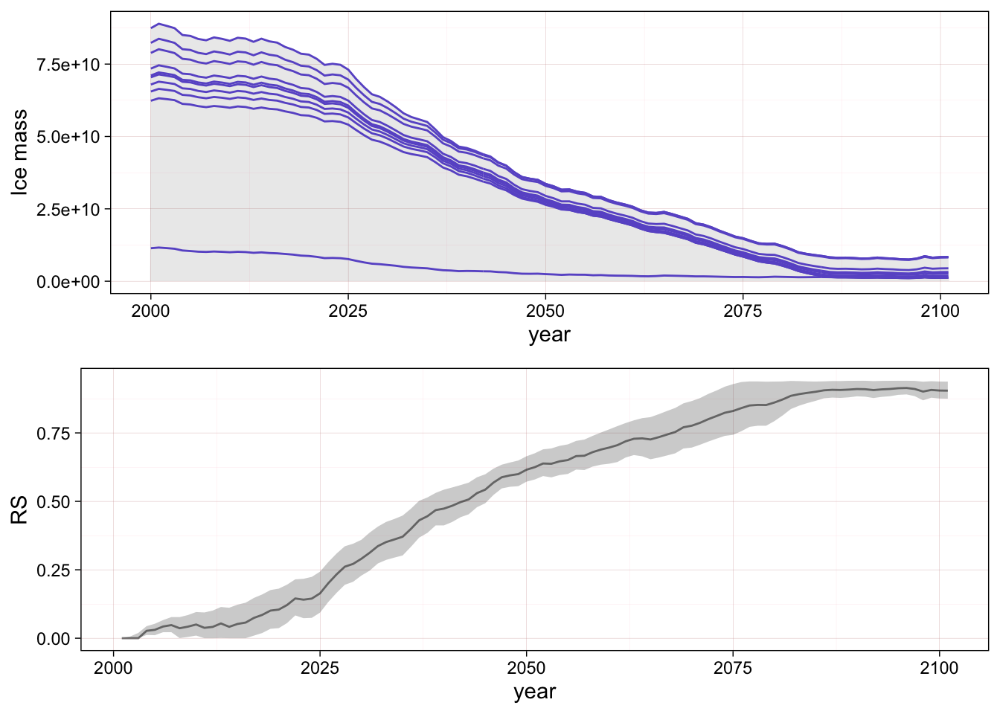
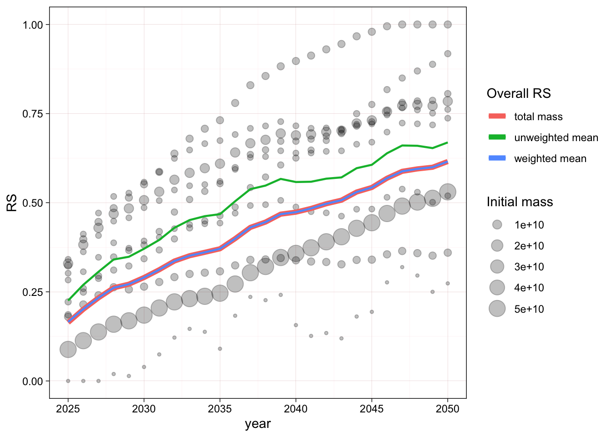

5 Average RS
So far we have looked at relative severity of single units of observation (raster cells or glacier outlines) but we are interested in describing degradation of abiotic conditions in the whole assessment unit.
5.1 Overall RS
We calculate the overall value of RS as a weighted arithmetic mean of \(\mathrm{RS}_i\) values:
\[ \overline{RS}=\frac{\sum_{i=1}^{n}\mathrm{RS}_{i} w_{i}}{\sum_{i=1}^n w_{i}} \]
Choice of formula
Aggregating unbounded \(\mathrm{RS}_i\) values can be problematic. In this table we calculate mean values for different thresholds and time frames for two assessment units considering one model and scenario combination. In both cases we see a clear increasing trend, but the values of the original formula are clearly influenced by the magnitude of the extreme negative or positive values of the underlying units of observation.
With the original formula, the interpretation of negative values or values above one would be problematic. The conditional formula guarantees that the mean of RS will be between 0 and 1 and thus can be clearly interpreted in terms of the overall magnitude of the degradation.
Total loss for the assessment unit
For the indicator variable of ice mass we have a physical quantity and the total ice mass of the assessment unit is the sum of the ice mass of each observation unit (glacier outlines).
Thus it is possible to calculate RS for the whole unit is by calculating the sum of the indicator variable first and then applying the RS formula. This is equivalent to calculating the weighted arithmetic mean as above.

Variability within assessment unit
Calculating relative severity for each outline might be misleading because the units differ in initial ice mass and contribute unequally to the total.
We can clearly see how different glaciers contribute to the total, and that for some periods of time the total amount is influence by several small glaciers, and in other periods it is influence by one large unit contributing most of the mass.
In this case, the calculation of RS for each outline is not informative unless we combine them with a weight related to their initial mass contribution.

Indeed the weighted mean of the RS values of individual glacier outlines is equal to the RS of the total ice mass for the whole assessment unit.
R session info for this chapter
R version 4.3.1 (2023-06-16)
Platform: aarch64-apple-darwin20 (64-bit)
Running under: macOS Sonoma 14.2.1
Matrix products: default
BLAS: /Library/Frameworks/R.framework/Versions/4.3-arm64/Resources/lib/libRblas.0.dylib
LAPACK: /Library/Frameworks/R.framework/Versions/4.3-arm64/Resources/lib/libRlapack.dylib; LAPACK version 3.11.0
locale:
[1] en_US.UTF-8/en_US.UTF-8/en_US.UTF-8/C/en_US.UTF-8/en_US.UTF-8
time zone: Australia/Sydney
tzcode source: internal
attached base packages:
[1] stats graphics grDevices utils datasets methods base
other attached packages:
[1] stringr_1.5.1 ggpubr_0.6.0 purrr_1.0.2 htmltools_0.5.7
[5] DT_0.31 ggforce_0.4.1 readr_2.1.4 ggplot2_3.4.4
[9] dplyr_1.1.4
loaded via a namespace (and not attached):
[1] gtable_0.3.4 xfun_0.41 bslib_0.6.1 htmlwidgets_1.6.4
[5] rstatix_0.7.2 tzdb_0.4.0 vctrs_0.6.5 tools_4.3.1
[9] crosstalk_1.2.1 generics_0.1.3 parallel_4.3.1 tibble_3.2.1
[13] fansi_1.0.6 pkgconfig_2.0.3 lifecycle_1.0.4 compiler_4.3.1
[17] farver_2.1.1 munsell_0.5.0 carData_3.0-5 sass_0.4.8
[21] yaml_2.3.8 pillar_1.9.0 car_3.1-2 crayon_1.5.2
[25] jquerylib_0.1.4 tidyr_1.3.0 ellipsis_0.3.2 MASS_7.3-60
[29] cachem_1.0.8 abind_1.4-5 tidyselect_1.2.0 digest_0.6.33
[33] stringi_1.8.3 labeling_0.4.3 cowplot_1.1.1 polyclip_1.10-6
[37] rprojroot_2.0.4 fastmap_1.1.1 grid_4.3.1 here_1.0.1
[41] colorspace_2.1-0 cli_3.6.2 magrittr_2.0.3 utf8_1.2.4
[45] broom_1.0.5 withr_2.5.2 scales_1.3.0 backports_1.4.1
[49] bit64_4.0.5 rmarkdown_2.25 bit_4.0.5 ggsignif_0.6.4
[53] hms_1.1.3 evaluate_0.23 knitr_1.45 rlang_1.1.2
[57] Rcpp_1.0.11 glue_1.6.2 tweenr_2.0.2 rstudioapi_0.15.0
[61] vroom_1.6.5 jsonlite_1.8.8 R6_2.5.1